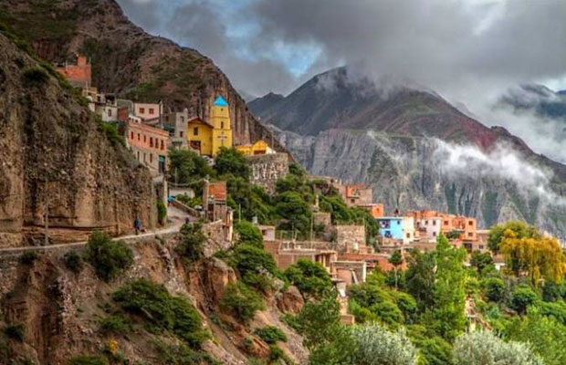
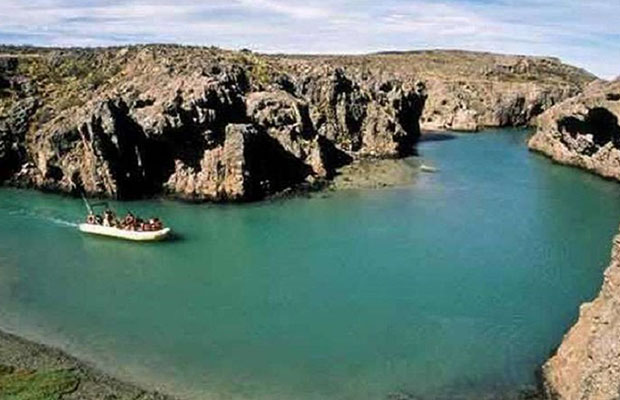

Cataratas
del Iguazú
Has clic sobre la imagen para más información
Entre las provincias de Misiones y Paraná, una aventura que te dejará sin
aliento. Sumérgete en una
experiencia única en las majestuosas Cataratas del Iguazú, una de las Siete Maravillas Naturales del
Mundo. Este tesoro natural, ubicado en la frontera entre Argentina y Brasil, te cautivará con su belleza
imponente y te invitará a vivir aventuras inolvidables.

Iruya
Has clic sobre la imagen para más información
Provincia de Salta (Sierra de Santa Victoria). Un viaje en el tiempo a través
de los Andes.Sumérgete en
la magia de Iruya, un pueblo ancestral encaramado en las alturas de la Quebrada de Humahuaca. Este
rincón encantador de Salta te transportará a otro tiempo, donde las tradiciones ancestrales se
entrelazan con paisajes de una belleza sobrecogedora.

Puerto
Deseado
Has clic sobre la imagen para más información
Provincia de Santa Cruz (al norte de la Ría Deseado). Un rincón salvaje de la
Patagonia.Sumérgete en la
belleza agreste de Puerto Deseado, un pequeño pueblo costero en la provincia de Santa Cruz que te
sorprenderá con su rica biodiversidad y su ambiente relajado. Este destino patagónico es ideal para los
amantes de la naturaleza y la aventura, que buscan un escape de la rutina y conectar con la esencia más
pura de la Patagonia.
